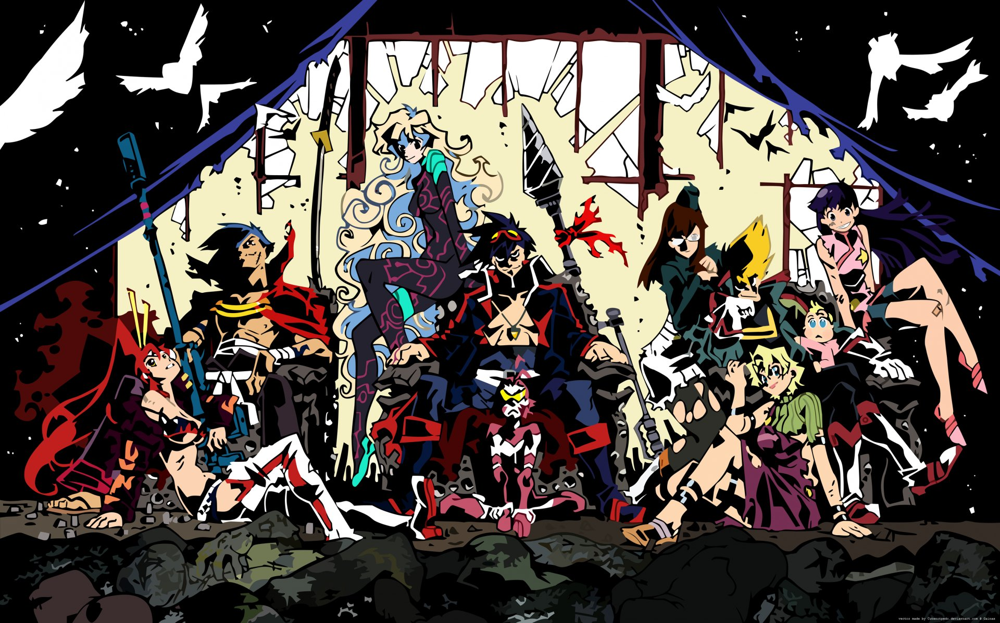
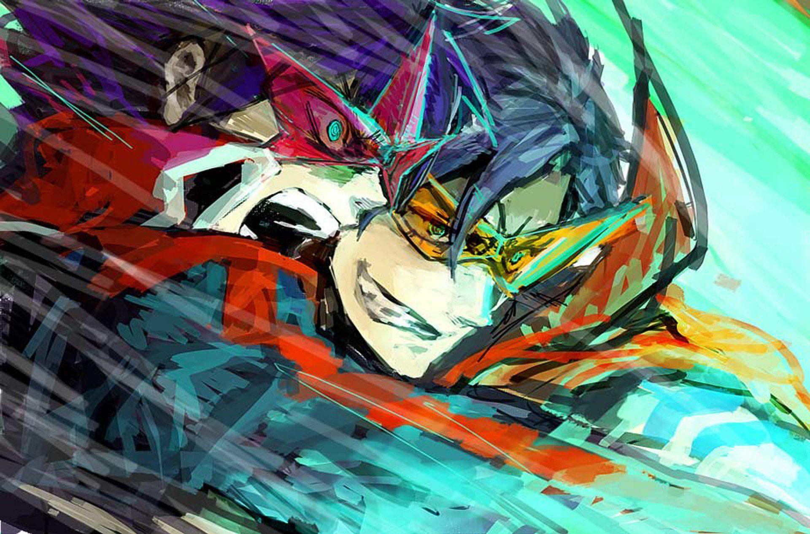
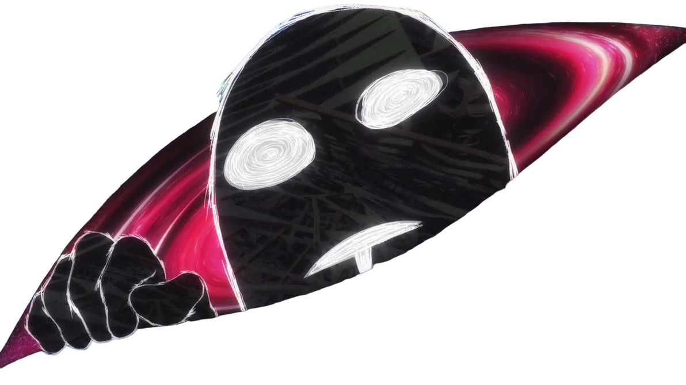
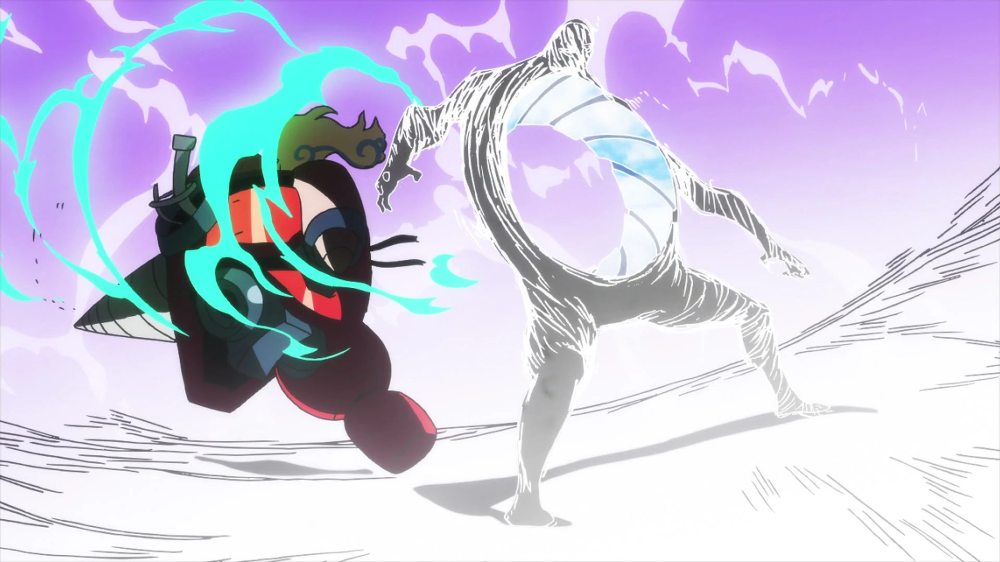

Música
tocando: Taku Iwasaki - Libera Me From Hell
Música
tocando: Taku Iwasaki - Libera Me From Hell
Música
tocando: Taku Iwasaki - Libera Me From Hell
Música
tocando: Taku Iwasaki - Libera Me From Hell
A trilha sonora original, Libera Me From Hell, é do anime Tengen Toppa Gurren Lagann, que conta a história de uma humanidade futurista, ou em uma dimensão alternativa, onde os poucos humanos existentes vivem no subterrâneo, desconhecidos do mundo existente acima do céu e estrelas.

Libera Me From Hell é uma das minhas OSTs favoritas por causa da combinação da música com o contexto na história. Ela toca em um dos clímax da reta final, onde os personagens precisam fazer o impossível e ver o invisível para conquistarem sua liberdade.

A música é uma combinação exótica de ópera e rap, simbolizando o conflito entre o determinismo dos Antiespirais e a força de vontade da humanidade.
Os Antiespirais são uma raça alienígena hiperavançada que, por medo de que a evolução contínua iria resultar na destruição do universo, os levando a estaganar toda raça de evoluir além dos limites impostos por eles, se tornando uma força absoluta de estagnação.
Eles acreditam que o destino já está traçado e qualquer tipo de progresso é proibido, e é por isso que a humanidade foi forçada a viver no subterrâneo.

AntiespiralNa reta final da OST, após a ópera o rap terem cantado separadamente durante a música toda, esses dois gêneros musicais opostos se juntam, mas não em harmonia. Eles começam uma "luta sonora". A ópera, com seu estilo melancólico e palavras dramáticas, evoca essa força absoluta e opressão divina dos Antiespirais. Por outro lado, o rap, com seu estilo rítmico e energético, começa com um volume baixo, representando a essência da evolução e do espírito humano.
Conforme a música avança para seu clímax final, o rap vai ganhando força e volume, até o momento que supera o volume da ópera, em outras palavras, a força de vontade da humanidade venceu o determinismo dos Antiespirais.

É essa dinâmica musical entre a ópera e o rap, que não apenas simboliza perfeitamente os dois lados da moeda, como também traduz a jornada dos personagens, o motivo de eu escolher essa OST.